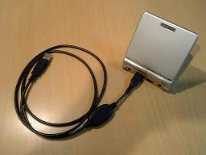
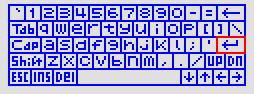

Prex Game Boy Advance - HOWTO
Version 0.8, 2008/09/24
Table of Contents
HOWTO
Technical Note
How to run Prex on the Game Boy Advance?
There exist some hardware to run Prex on the Game Boy Advance.
Currently, I am using "Boot Cable USB" which is sold by
Optimize.
And, its control software is available for download from this
page.
Unfortunately, these are only japanese page... :-(
You may find other useful information to run your program on GBA at
http://www.gbadev.org.
Figure 1. Boot Cable USB

How to run Prex with the VisualBoy Advance?
VBA - VisualBoy Advance is most popular GBA emulator. You can find the
latest release at
http://www.vba.ngemu.com.
To run Prex with VBA, simply select file->open and open the prex image.
There is no need to prepare the original GBA BIOS.
Important: You must rename the file name of the image to "prexos.gba".
It seems VBA is checking the file extension to validate the image.
The default keyboard setting of VBA is as follows:
Table 1. VBA Key Assign
| PC Key |
GBA Button |
| Cursor Keys |
Up, Down, Left, Right |
| Z |
Button A |
| X |
Button B |
| A |
Button L |
| S |
Button R |
| Enter |
Start |
| Backspace |
Select |
How to compile Prex for Game Boy Advance?
At first, you have to prepare the toolchain for cross compiling ARM code.
And then, the shell variables must be set for the arm-gba target.
Step 1. Unpack Archives
You have to download and unpack the following files.
$ cd /usr/src
$ tar zxvf binitils-2.15.tar.gz
$ tar zxvf gcc-core-3.4.3.tar.gz
Step 2. Build Binutils
Configure and build binutils.
$ mkdir binutils-2.15-arm-elf
$ cd binutils-2.15-arm-elf
$ ../binutils-2.15/configure --prefix=/usr/local/arm --target=arm-elf --disable-nls \
--with-cpu=arm7tdmi
$ make
$ make install
You must set the path to this binutils.
$ export PATH=/usr/local/arm/bin:$PATH
$ cd /usr/src
Step 3. Build gcc
$ mkdir gcc-3.4.3-arm-elf
$ cd gcc-3.4.3-arm-elf
$ ../gcc-3.4.3/configure --prefix=/usr/local/arm --target=arm-elf --with-gnu-as \
--with-gnu-ld --with-cpu=arm7tdmi --disable-nls --enable-languages=c \
--enable-interwork
$ make LANGUAGES="c"
$ make LANGUAGES="c" install
$ cd /usr/src
Step 4. Unpack Sources
Unpack the sources and move to top level directory of the source tree.
$ cd /usr/src
$ tar zxvf prex-X.X.X.tar.gz
$ cd prex-X.X.X
Step 5. Configure
Setup target architecture and platform.
$ ./configure --target=arm-gba --cross-compile=arm-elf-
Step 6. Make
Run make.
$ make
Note: There is a cross-compiling kit for GBA named
DevKit Advance.
It may be usable for compiling Prex.
How to use On-Screen Keyboard?
Figure 2. On-Screen Keyboard

The driver for on-screen keyboard is provided to emulate a generic keyboard
by using the GBA keypad. You can input any key by moving the cursor on the
on-screen keyboard. The user can show/hide the on-screen keyboard on the
GBA screen by pressing select button. The key assign is different
for each case.
Table 2. Key for On-screen Keyboard
| GBA Key |
Function |
| A |
Input current pointed key |
| B |
"Enter" key |
| Select |
Hide on-screen keyboard |
| Start |
N/A |
| Right |
Move keyboard cursor right |
| Left |
Move keyboard cursor left |
| Up |
Move keyboard cursor up |
| Down |
Move keyboard cursor down |
| R |
Toggle shift state |
| L |
Toggle shift state |
Table 3. Default Key (No On-screen Keyboard)
| GBA Key |
Function |
| A |
"A" key |
| B |
"B" key |
| Select |
Show on-screen keyboard |
| Start |
"Enter" key |
| Right |
Cursor "Right" key |
| Left |
Cursor "Left" key |
| Up |
Cursor "Up" key |
| Down |
Cursor "Down" key |
| R |
"R" key |
| L |
"L" key |
Technical Specs
GBA H/W Spec
Table 4. GBA Spec
| Processor |
ARM7TDMI, 16.78MHz |
| IWRAM (Internal) |
32 kB |
| EWRAM (External) |
256 kB |
| VRAM |
96 kB |
| LCD |
2" TFT 240 x 160 pixels |
Memory map
Table 5. Memory map
| 00000000 - 00003FFF |
BIOS - System ROM |
| 02000000 - 0203FFFF |
EWRAM (256K) |
| 03000000 - 03007FFF |
IWRAM (32K) |
| 04000000 - 040003FF |
I/O Registers |
| 05000000 - 050003FF |
Palette RAM |
| 06000000 - 06017fFF |
VRAM |
| 07000000 - 070003FF |
Object Attributes |
Prex VRAM Usage
Table 6. Prex VRAM Usage
| 06000000 - 06003FFF |
Tile 1 - Font |
| 06004000 - 06005FFF |
Tile 2 - Keyboard Image (non shift) |
| 06006000 - 06007FFF |
Tile 2 - Keyboard Image (shift) |
| 06008000 - 06008FFF |
Background 3 Map (Console text) |
| 06009000 - 06009FFF |
Background 1 Map (Keyboard non-shift) |
| 0600A000 - 0600AFFF |
Background 2 Map (Keyboard shift) |
| 0600B000 - 0600FFFF |
Not used
|
| 06010000 - 0601FFFF |
Cursor Data
|
System Call
Since the GBA BIOS does not allow to handle the SWI event by
the program, we need some trick to handle the system call.
The system call will be handled by the following steps.
- The application invoke the system call.
- The system call stub in the library will jump to the SWI exception
vector (0x0202007C) in the kernel code.
#define SYSCALL0(name) \
.global name; .align; \
name##: \
stmfd sp!, {r4, r5, lr}; \
mov r4, #SYS_##name; \
ldr r5, =0x202007c; \
add lr, pc, #2; \
mov pc, r5; \
ldmfd sp!, {r4, r5, pc};
- The kernel SWI handler will switch the processor mode to SVC mode.
ENTRY(syscall_entry)
mov r5, lr
mrs ip, cpsr
bic ip, ip, #PSR_MODE
orr ip, ip, #PSR_SVC_MODE
msr cpsr_c, ip
mov lr, r5
Since a program can not change the ARM processor mode during the USR mode,
all applications are always executed in SYS mode in Prex arm-gba port.
|